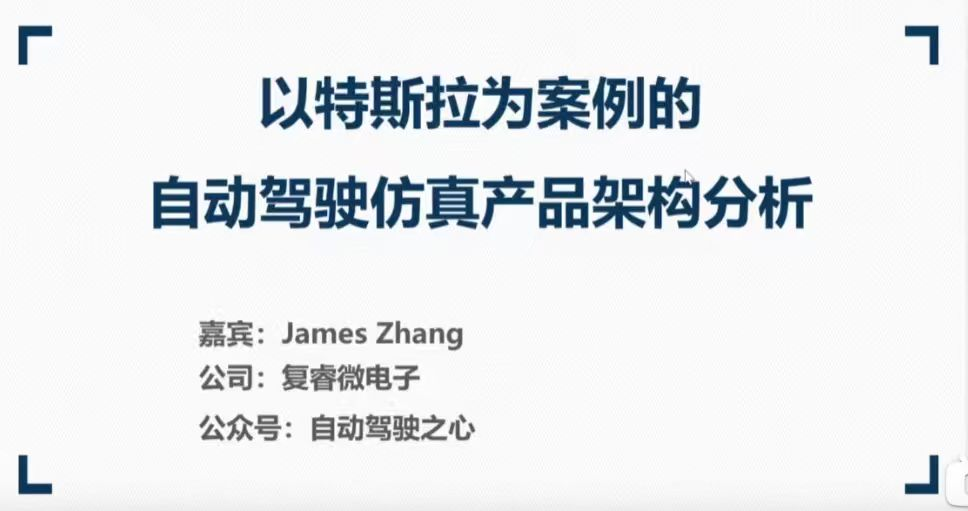
主题：以特斯拉为案例的自动驾驶仿真产品架构分析
嘉宾：James Zhang (复睿微电子)
来源：自动驾驶之心
核心议题：分析自动驾驶仿真的关键架构设计，探讨特斯拉如何利用大规模仿真闭环加速自动驾驶算法的迭代与验证。
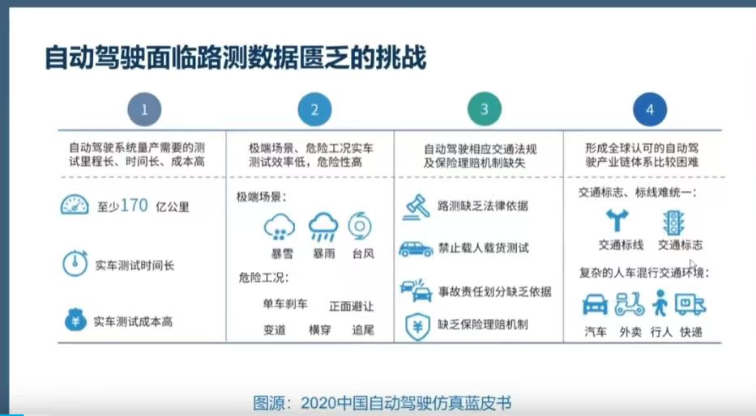
1. 测试里程与成本：系统量产需求至少170亿公里测试，导致时间成本极高。
2. 极端工况局限：暴雪、暴雨、台风等极端环境，以及变道、横穿、追尾等高危场景下实车测试风险大、效率低。
3. 法规与责任机制缺失：路测缺乏法律依据，载人/载货测试限制，事故责任与保险理赔缺乏准则。
4. 行业标准与环境复杂性：全球交通标识难以统一，且人车混行（行人、外卖、快递、汽车）环境极其复杂。
图源：2020中国自动驾驶仿真蓝皮书
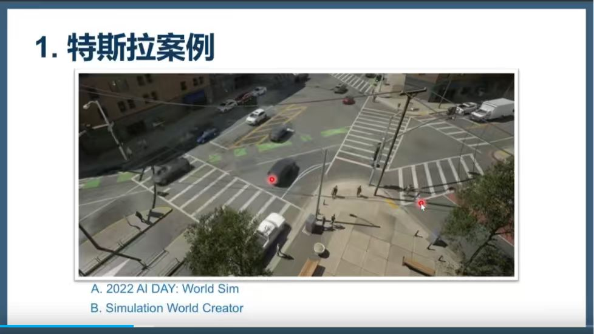
A. 2022 AI DAY: World Sim: 介绍特斯拉在仿真环境构建方面的演进，强调高保真度环境的实时生成能力。
B. Simulation World Creator: 特斯拉用于自动生成仿真世界的核心工具，大幅降低了创建复杂路网与交通场景的成本与时间。
Q1: Simulation World Creator 的工作流是什么？
其核心工作流遵循“多源数据输入 → 自动化解析 → 环境重构 → 引擎渲染”的范式：
1. 数据接入 (Ingest): 汇集自动化标注地面真值、地图先验数据及场景参数配置。
2. 切片组织 (Tile Creation): 将大规模地图数据切分为离散的 Tile 进行并行处理。
3. 要素提取与加载 (Extract & Load): 提取几何信息与资产实例，并映射至 3D 引擎。
4. 环境渲染 (Render): 在 Unreal Engine 等引擎中最终生成可实时交互的仿真场景。
技术亮点：通过自动化工具将真实世界数据转化为可交互的仿真环境，实现算法的闭环验证。
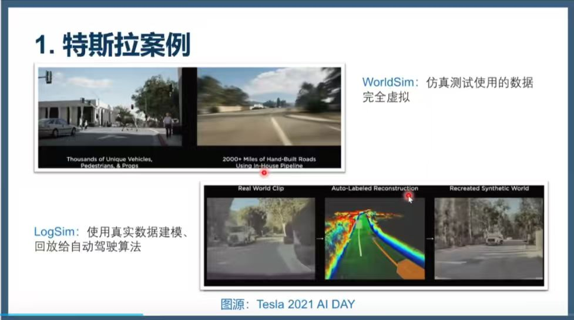
Q1: WorldSim 的工作流及优缺点？
WorldSim 作为特斯拉完全虚拟环境仿真核心，其工作流与核心特质如下：
1. 工作流: 基于全自动化管线，首先将地图数据与场景要素进行切片处理，随后调用仿真引擎生成高保真路网，最后结合程序化生成的动态对象填充场景。
1. WorldSim (完全虚拟):
利用内部管线生成数千种独特车辆、行人和道具，以及超过2000英里的手工道路模型，用于纯虚拟环境下的仿真测试。
Q1: WorldSim的工作流及优缺点？
- 工作流：基于内部资产库与程序化生成管线，自动生成虚拟道路与场景资产，配置交通流规则，实现仿真环境的快速构建。
- 优点：能够低成本、高效率地覆盖海量仿真场景，支持参数化生成，适合大范围边缘案例测试。
- 缺点：场景逼真度受限于美术资产质量与仿真引擎渲染效果，难以完全模拟真实世界中复杂的物理干扰与随机交互。
2. LogSim (基于真实数据):
通过对真实驾驶片段 (Real World Clip) 进行自动标注重建 (Auto-Labeled Reconstruction)，生成重构的虚拟世界 (Recreated Synthetic World)，回放至自动驾驶算法中进行验证。
Q2: LogSim的工作流及优缺点？
- 工作流：对真实采集的驾驶日志数据进行提取，利用自动标注管线进行环境重构与物体状态追踪，生成仿真回放数据集，在仿真引擎中精确回放驾驶过程。
- 优点：场景极其真实，数据源于真实行车经历，能够精确验证算法在特定真实场景下的逻辑表现。
- 缺点：重构过程依赖大量真实数据采集，场景泛化性较差（仅能回放既有场景），受限于真实数据的覆盖范围。
总结：特斯拉通过 WorldSim 扩展虚拟场景，通过 LogSim 利用真实数据回放，形成双轮驱动的仿真闭环。
图源：Tesla 2021 AI DAY
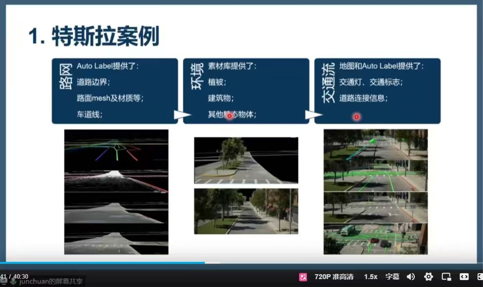
1. 路网 (Road Network): 基于 Auto Label 自动标注技术，提取道路边界、路面 Mesh 材质以及精确的车道线信息。
2. 环境 (Environment): 利用素材库填充植被、建筑物及其他静态物体，构建高逼真度的物理环境。
3. 交通流 (Traffic Flow): 结合地图数据与 Auto Label，生成交通灯、交通标志及动态的道路连接信息，实现真实的交通交互模拟。
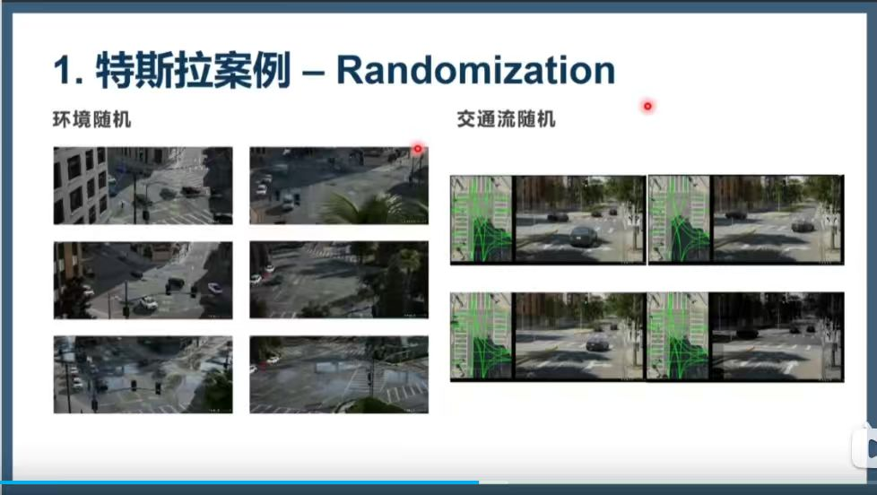
1. 环境随机 (Environment Randomization):
通过对仿真场景中的天气、光照、时间段（如日出、正午、黄昏）及纹理进行随机化处理，提升算法在复杂光照条件下的鲁棒性。
2. 交通流随机 (Traffic Flow Randomization):
基于预定义路网生成多种交通流轨迹模式（如车辆路径轨迹、速度波动、变道逻辑随机），以模拟真实道路中多样化的驾驶行为与交互意图。
技术价值：通过随机化技术，打破仿真场景的确定性，为算法提供海量的边缘案例 (Corner Cases) 与分布外 (OOD) 测试环境，显著提升自动驾驶模型的泛化能力。
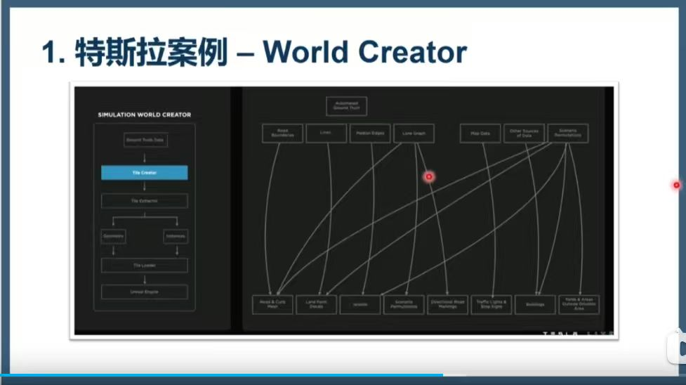
1. 数据接入层: 统一输入包括 Automated Ground Truth、Map Data、场景变体 (Scenario Permutations) 等多种数据源。
2. 自动化生成管线 (Pipeline): 采用模块化处理：
- Tile Creator: 执行 tile 级别的数据切分与组织。
- Tile Extractor & Loader: 负责几何数据 (Geometry) 与实例 (Instances) 的高效提取与加载。
3. 环境构建输出: 最终映射生成复杂的 3D 仿真元素：包括道路网格 (Road Mesh)、地标 decals、交通设施 (Traffic Lights/Signs)、建筑物以及特定的行驶区域。
技术核心：通过将多源原始数据高效转化为可运行在 Unreal Engine 中的仿真场景，实现了大规模、高动态的仿真闭环。
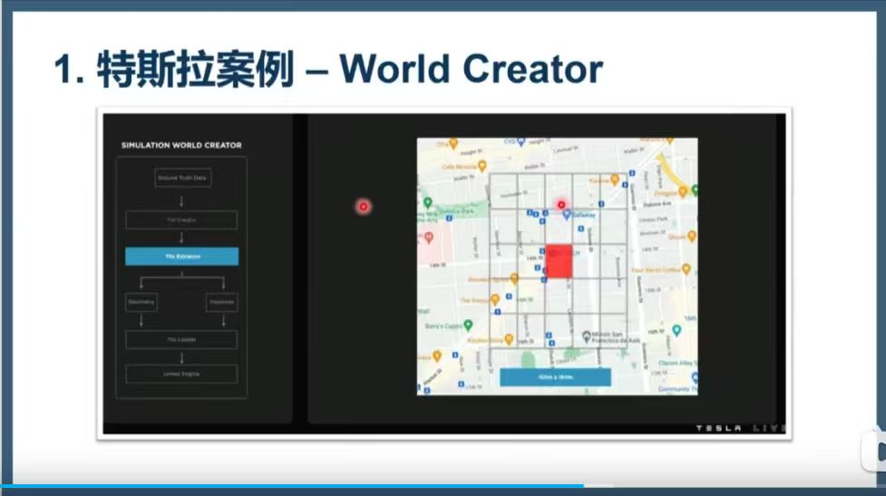
1. 地图网格化选择: 展示了 Simulation World Creator 的可视化地图界面。用户可以通过网格（Tile）直观地选择目标区域进行仿真环境重构。
2. 闭环关联: 左侧展示了系统背后的数据处理管线（即前一页 Slide 7 中的架构），右侧展示了对应的地图网格化操作，体现了“所选即所得”的仿真世界构建理念。
3. 系统直观性: 特斯拉通过这种高度集成的交互工具，使得大规模地图区域的选取、数据提取与仿真加载过程变得极其简便，极大降低了对专业仿真人员的依赖。
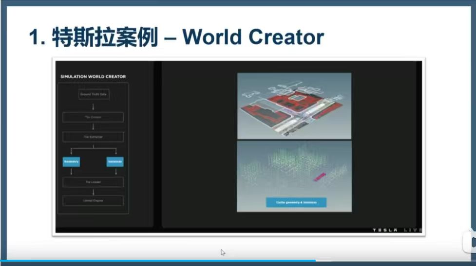
1. 系统流程 (System Pipeline): 左侧详细展示了 Simulation World Creator 的数据流：
- Ground Truth Data (地面真值) → Tile Creator → Tile Extractor → Geometry/Instances → Tile Loader → Unreal Engine。
2. 数据可视化 (Visual Reconstruction):
- 上图：展示了经过处理后的 3D 场景可视化（包含路网、建筑及地面特征）。
- 下图：强调了 Geometry & Instances (几何与实例) 的提取效果，将原始数据转化为可在仿真引擎中运行的 3D 模型结构。
技术总结：特斯拉通过高度模块化的数据管线，将复杂的真实世界数据转化为精细的仿真资产，实现了从原始 Ground Truth 到 UE 渲染环境的全链路打通。
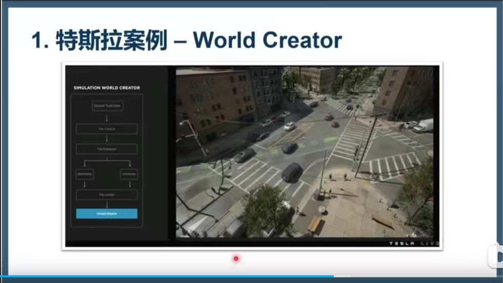
1. 环境重构效果: 展示了 Simulation World Creator 生成的 3D 城市路口场景。该场景高度还原了真实城市的物理特征，包括道路几何、人行横道、交通设施以及光影表现。
2. 仿真与真实对比: 该可视化不仅用于算法验证，其高精细度也体现了特斯拉在仿真引擎（如 Unreal Engine）中对于物理世界高保真渲染的追求。
3. 系统应用: 结合之前页面提到的数据管线，该画面是特斯拉将真实世界数据转化为高保真 3D 仿真资产后的最终渲染结果，为感知与规划算法提供了最接近真实的虚拟测试场地。
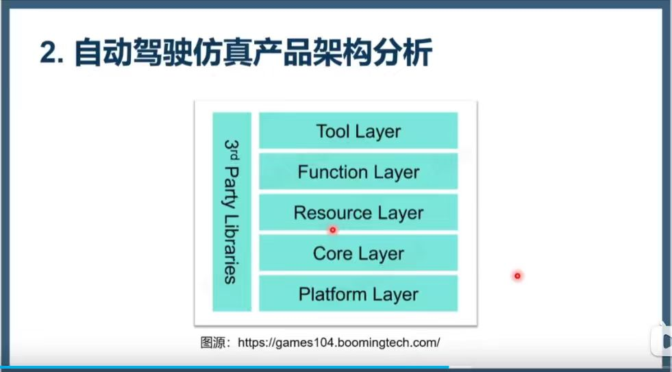
1. Tool Layer (工具层): 提供用户交互界面、场景编辑器、仿真控制及可视化工具。
2. Function Layer (功能层): 包含感知、规划、决策及轨迹生成等具体仿真功能模块。
3. Resource Layer (资源层): 管理地图数据、交通参与者模型、天气光照纹理等仿真资源。
4. Core Layer (核心层): 仿真引擎核心，执行物理模拟、动力学计算及碰撞检测。
5. Platform Layer (平台层): 仿真系统底座，提供异构硬件支持、分布式集群调度与底层 API。
侧边支持: 3rd Party Libraries (第三方库): 集成了如 Physics Engine、Render Engine 等外部专业库以扩展能力。
图源：https://games104.boomingtech.com/
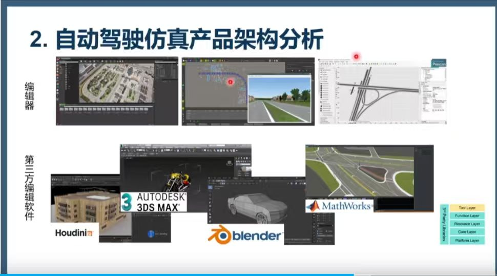
1. 编辑器 (Editors): 仿真平台内置的专用编辑器，用于场景搭建、路径规划及测试场景定义（如场景图、路网编辑）。
2. 第三方编辑软件 (3rd Party Authoring Tools): 仿真系统高度依赖专业 DCC (Digital Content Creation) 与 CAD 软件进行高保真资产构建：
- 3D 资产建模: Autodesk 3DS MAX, Blender (环境/车辆建模)。
- 程序化生成: Houdini (复杂环境资产、路网程序化生成)。
- 动力学与控制: MathWorks (模型在环/代码生成)。
架构位置: 这些工具主要服务于 Resource Layer (资源层) 的资产产出，通过接口导入核心仿真平台，完成从非结构化资产到结构化仿真环境的转化。
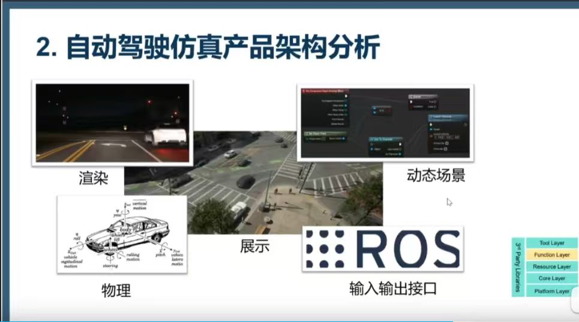
1. 渲染 (Rendering): 基于仿真引擎提供高逼真度环境模拟，为视觉感知任务提供数据支持。
2. 动态场景 (Dynamic Scenarios): 提供可视化工具与配置界面，用于定义和动态调整交通流逻辑。
3. 物理模拟 (Physics): 集成车辆动力学模型（如 6自由度运动、侧倾、俯仰、偏航等），确保仿真环境的物理真实感。
4. 输入输出接口 (I/O & ROS): 采用 ROS 等主流通信标准，实现与自动驾驶算法模块的标准化数据交换与通信。
架构总结: 此 Slide 展现了各功能模块（渲染、物理、场景配置）与外部接口（ROS）如何协同工作，共同支撑上述讨论的五层架构。
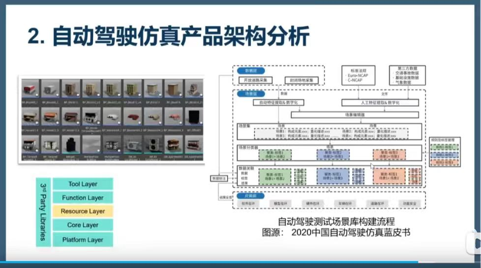
1. 数据输入层 (Data Input): 整合开放道路与封闭场地采集数据，辅以标准法规 (如 NCAP) 及第三方数据（气象、基础设施等）。
2. 场景数字化处理: 通过“自动特征提取”与“人工特征提取”双轨流程，将原始数据转化为标准化场景格式。
3. 场景库管理: 建立由“场景描述”、“场景分类器”与“数据关联”构成的分级存储体系：
- 场景要素级: 构成元素与量化描述。
- 标签级: 对复杂场景进行标准化标注与分类管理。
4. 应用闭环: 最终支撑“程序在环 (SiL)”、“模型在环 (MiL)”、“硬件在环 (HiL)”及“车辆在环 (ViL)”等全方位仿真验证测试。
图源：2020中国自动驾驶仿真蓝皮书
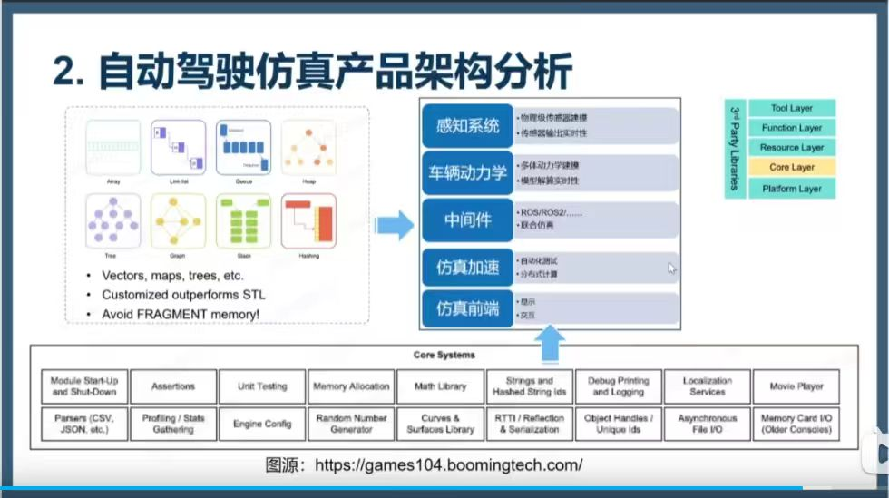
1. 数据结构优化 (Data Structures): 左侧展示了仿真系统底层基础数据结构（Array, Tree, Graph, Hashing 等）。强调为了高性能，需自定义优于 STL 的结构，并极力避免内存碎片化。
2. 核心功能映射: 右侧展示了仿真系统各业务模块（感知、动力学、中间件、加速、前端）与底层支撑组件的调用关系。
3. Core Systems (核心系统底层): 底部列举了支撑整个仿真运行的通用基础服务：
- 生命周期管理: Module Start-up/Shut-down, Assertions。
- 基础库: Math Library, Random Number Gen, Memory Allocation。
- 调试与 IO: Debug Printing/Logging, CSV/JSON Parsers, Async File I/O。
图源：https://games104.boomingtech.com/
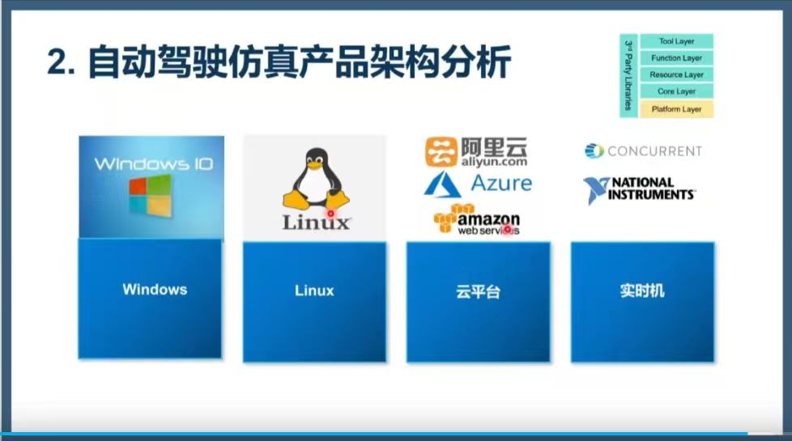
该 Slide 展示了自动驾驶仿真平台对不同运行环境的广泛适应性，这是支撑仿真架构各分层组件的基础：
1. 本地环境: 支持 Windows (Windows 10) 与 Linux，满足不同开发工具链与算法环境的兼容需求。
2. 云平台 (Cloud Computing): 集成主流云服务商，包括 阿里云 (Alibaba Cloud)、微软 Azure 及 亚马逊 AWS，支持大规模仿真集群部署与弹性资源调度。
3. 实时机 (Real-time Systems): 集成了 Concurrent 和 National Instruments (NI) 等硬件解决方案，满足硬件在环 (HiL) 等对确定性实时性有严苛要求的仿真任务。
设计价值：通过平台无关性设计，实现了仿真环境在开发、测试、云端与实车 HiL 平台间的无缝迁移与分布式扩展。
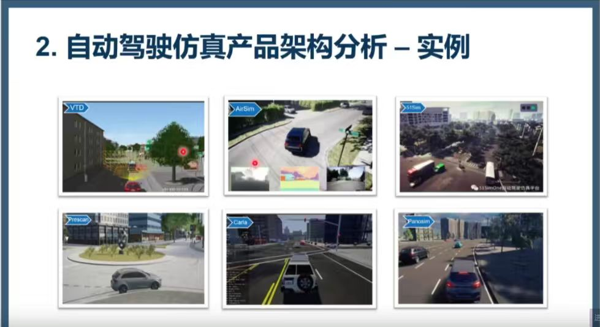
该 Slide 展示了行业内具有代表性的六大自动驾驶仿真软件/平台，它们共同构成了当前仿真技术生态的基石：
1. VTD (Virtual Test Drive): 德国 VIRES 公司产品，在车企量产仿真中应用广泛，以高仿真度与多领域兼容性著称。
2. AirSim: 微软开源的基于 Unreal Engine 的模拟器，常用于无人机与自动驾驶算法的前沿探索。
3. 51Sim: 51World 开发的自动驾驶仿真平台，基于真实世界构建的数字孪生场景，适用于城市级仿真。
4. Prescan: Siemens 旗下的仿真软件，擅长基于物理建模的传感器与复杂场景仿真。
5. CARLA: 学术界最主流的开源仿真器，提供灵活的传感器接口与丰富的场景资源。
6. PanoSim: 一款国产化程度较高的仿真软件，提供高度集成的自动驾驶仿真测试环境。
技术总结: 上述平台展示了从传统车规级仿真 (VTD/Prescan) 到新兴数字孪生 (51Sim) 及学术/开源方案 (AirSim/CARLA) 的多样化演进路径。
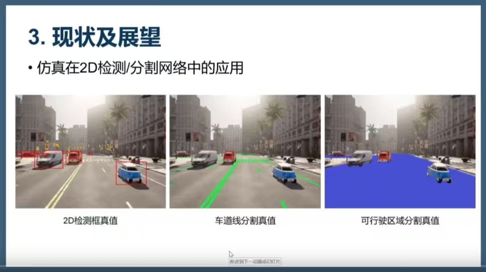
该 Slide 展示了仿真技术如何通过高保真度环境渲染，直接为 2D 感知网络提供精确的“地面真值 (Ground Truth)”，从而解决真实世界标注成本高、长尾场景稀缺的问题：
1. 2D 检测框真值: 自动生成物体边界框 (Bounding Box)，覆盖复杂交通流下的多类型参与者。
2. 车道线分割真值: 自动标注精细车道线，实现像素级的语义分割监督。
3. 可行驶区域分割真值: 准确提取道路行驶空间 (Drivable Area)，为规划模块提供先验地图语义。
价值点: 实现了从仿真环境到感知模型训练数据的自动化闭环，显著提升了感知网络在复杂与极端工况下的训练效率与覆盖范围。
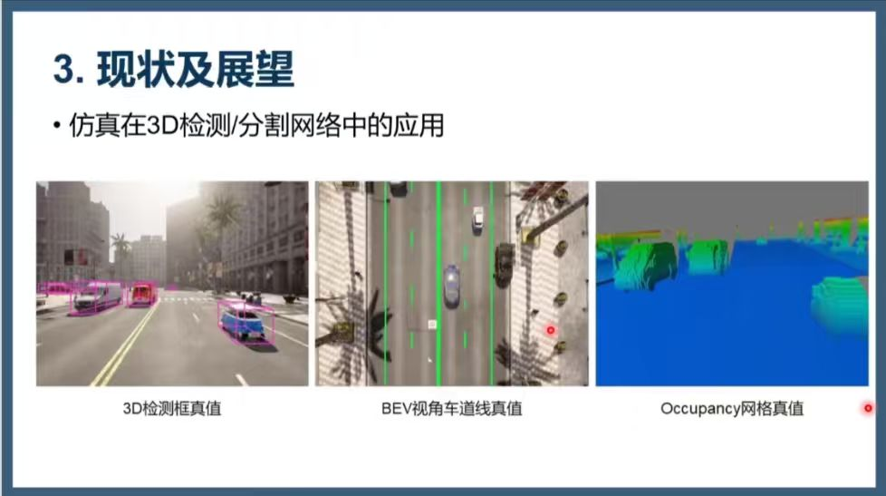
本页展示了仿真技术在 3D 感知任务中的关键应用，通过自动生成高精度 Ground Truth 支撑复杂的 3D 深度感知：
1. 3D 检测框真值: 为 3D 目标检测模型提供精准的 3D 边界框标注，实现复杂交通场景下车辆/行人的高精度空间定位。
2. BEV 视角车道线真值: 在鸟瞰视角 (BEV) 下自动标注车道线真值，为 BEV 感知范式提供强监督信号。
3. Occupancy 网格真值: 为占据预测 (Occupancy Prediction) 任务生成体素网格真值，有效覆盖感知模型中的非分类障碍物，解决感知盲点。
技术总结: 仿真生成的这三类 3D 真值，是构建高性能 BEV 与 Occupancy 感知模型的基石，极大地降低了人工标注点云与 BEV 语义空间的巨大成本。
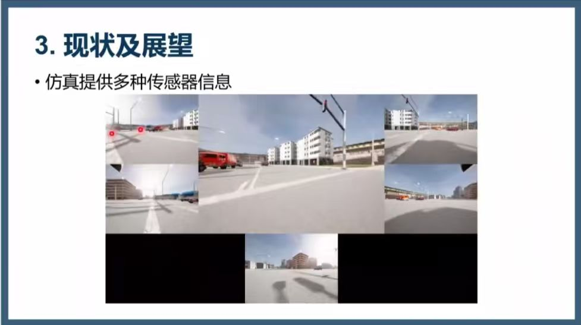
1. 多传感器模拟: 该 Slide 展示了仿真平台如何实时生成多视角视觉数据（如多相机阵列），实现对复杂真实交通场景的高还原度覆盖。
2. 传感同步性: 仿真系统能够确保多传感器数据在时空上的完美对齐，为自动驾驶系统提供高一致性的感知训练输入。
3. 未来展望:
- 更高逼真度: 持续提升材质、光照、复杂天气下传感器的物理特性仿真。
- 更广覆盖: 集成更多类型的传感器模型（如 LiDAR, Radar, Ultra-sonic），构建全模态仿真闭环。
- 标准化接口: 推动传感器仿真数据与车规级感知模块的无缝接入与验证。
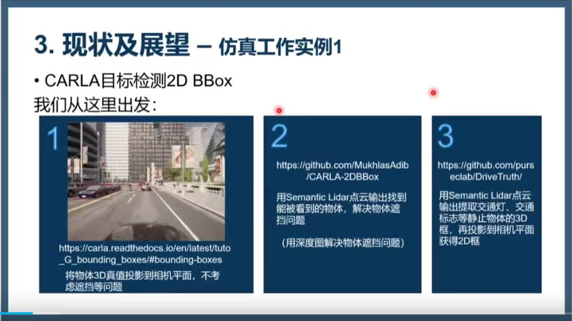
本页通过 CARLA 仿真环境，对比了获取目标检测 2D BBox 真值的三种技术路径：
1. 基础投影法: 直接将物体 3D 真值投影到相机平面，不考虑遮挡问题。
参考: carla.readthedocs.io
2. 遮挡感知法: 利用 Semantic LiDAR 点云识别可见物体，有效解决物体遮挡问题，并辅以深度图处理遮挡。
参考: GitHub/MukhlasAdib/CARLA-2DBBox
3. 语义投影法: 利用 Semantic LiDAR 提取交通灯、交通标志等静止物体的 3D 框，再投影至相机平面生成 2D 框。
参考: GitHub/purseclab/DriveTruth
技术总结: 从简单的投影到基于点云遮挡处理与语义重构，仿真数据生成方案的精度与鲁棒性在持续演进。
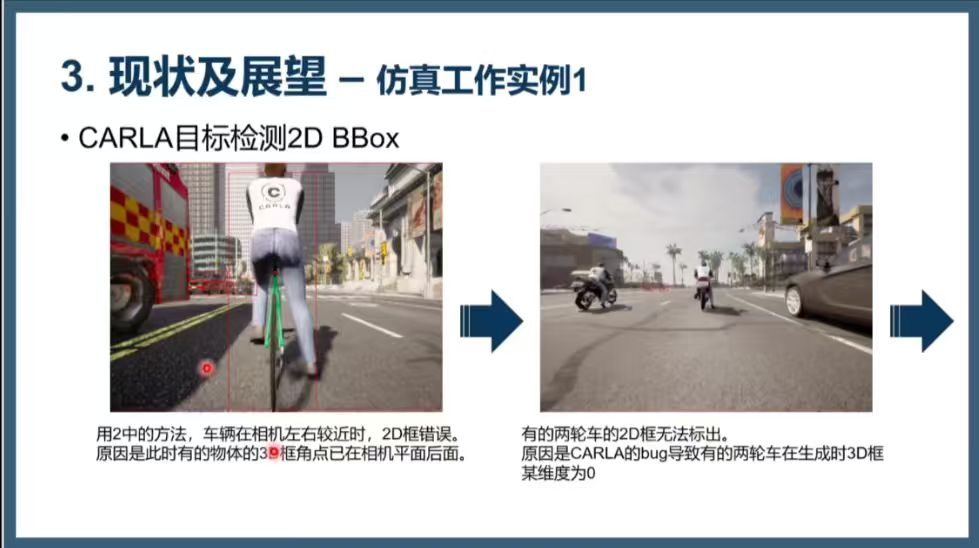
本页记录了在仿真环境下生成 2D BBox 真值时遇到的典型失败案例及根因：
1. 近距离遮挡异常: 当物体位于相机侧后方或极近位置时，其 3D 边界框的某些顶点可能位于相机平面后方，导致投影计算错误，生成了错误的 2D 边框。
2. 漏检 Bug: 在特定视角下，部分两轮车无法生成 2D BBox。根因是 CARLA 仿真引擎内部存在 Bug，导致在某些特定条件下生成的 3D 框某一个维度数值为 0，从而导致投影失效。
经验教训: 仿真数据的质量不仅取决于生成算法，更高度依赖仿真引擎底层稳定性；在自动化标注管线中，必须引入健壮的几何校验逻辑（如剔除相机平面后方的点、过滤维度为 0 的异常框）以保证数据可用性。
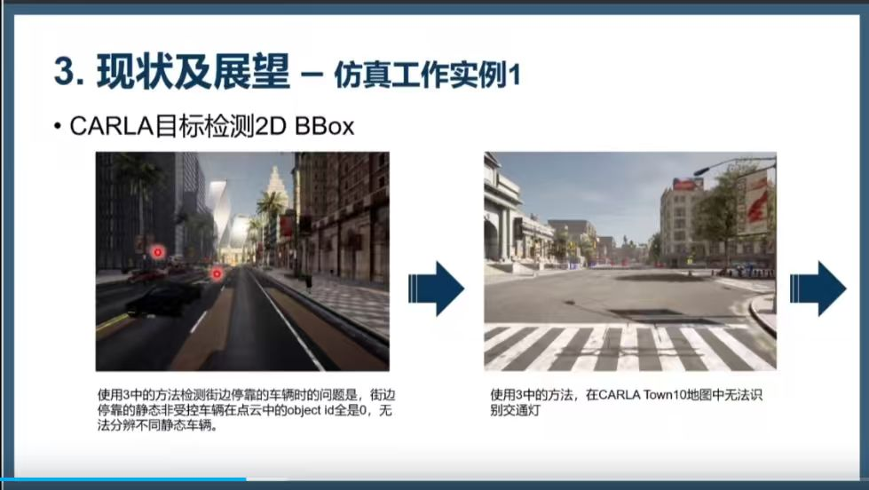
本页进一步剖析了在 CARLA 环境下使用特定标注方法时遇到的具体瓶颈：
1. 静态车辆识别难题: 在检测街边停靠车辆时，由于 CARLA 中此类车辆的 3D 点云 Object ID 均为 0，导致无法通过 ID 区分不同的静态车辆，从而无法生成独立的检测框。
2. 交通灯识别缺失: 在特定场景（如 CARLA Town10 地图）中，现有方法无法有效识别交通灯，导致关键语义要素的标注缺失。
技术反思: 这些问题揭示了仅仅依赖语义 ID 进行仿真数据标注存在局限。未来需结合 **语义分割 (Semantic Segmentation)** 与 **多源信息融合** (如结合 BEV 空间特征) 来提升标注管线的完备性，解决静态物体与小目标语义提取的难题。
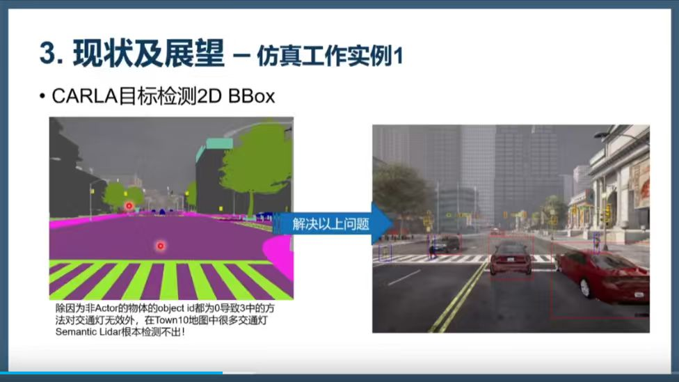
本页针对 Slide 23 提到的 Object ID 为 0 与交通灯识别缺失问题，提出了改进方案：
1. 语义 ID 归一化与增强: 针对非 Actor 物体 Object ID 为 0 的问题，不再仅依赖 Actor ID，而是结合 语义分割图 (Semantic Segmentation) 进行区域重构，从分割掩码中反向提取物体边界，从而实现对静态车辆的准确标注。
2. 交通灯语义挖掘: 针对 Town10 等地图中 Semantic LiDAR 无法检测交通灯的问题，引入 基于视觉的语义分类器 或 HDMap 先验信息 进行辅助标注，直接从高精地图数据中定位交通灯位置，并结合相机投影生成对应的 2D 检测框。
结论: 通过“语义分割引导的边界提取”与“语义地图先验辅助”，有效解决了传统基于单一 Object ID 标注方案在复杂交通要素（静态障碍物、交通灯）上的检测盲点。
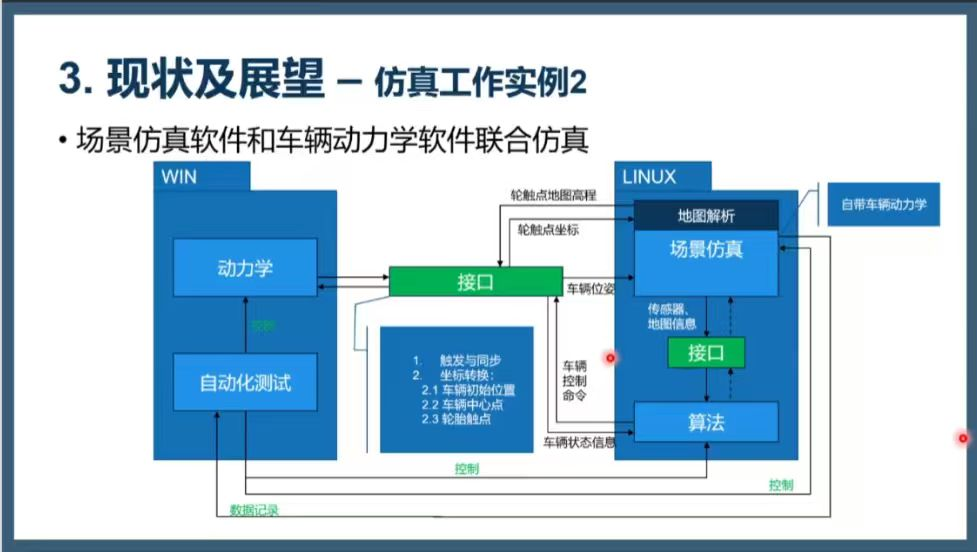
本页展示了在 Windows 与 Linux 环境下，通过中间接口实现的**场景仿真与动力学联合仿真**架构：
1. 系统组成:
- Win 环境: 运行动力学模型与自动化测试模块。
- Linux 环境: 运行场景仿真、算法模块与地图解析。
2. 核心功能:
- 触发与同步: 确保两端运行步长一致。
- 坐标转换: 处理车辆初始位置、车辆中心点与轮胎触地点的坐标系对齐。
- 数据闭环: 实现了包括车辆位姿、轮胎触地点数据、车辆控制命令及状态信息的双向交互。
价值点: 通过标准的接口设计，消除了多操作系统环境下的异构计算壁垒，实现了高精度动力学模型与高保真场景仿真的深度集成。
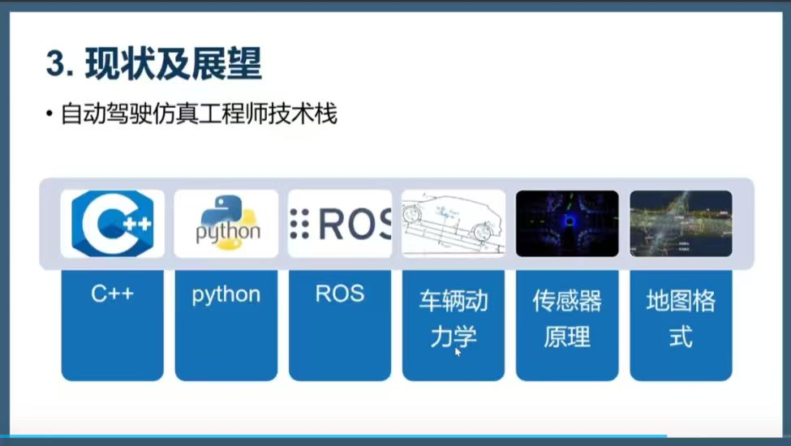
本页定义了自动驾驶仿真工程师的核心技术能力需求，分为编程基础与领域知识两大模块：
1. 编程与通信基础 (Development):
- C++: 仿真平台核心开发与性能优化。
- Python: 快速脚本开发、仿真管线管理与实验配置。
- ROS: 标准化消息通信与系统集成框架。
2. 领域核心知识 (Domain Knowledge):
- 车辆动力学 (Vehicle Dynamics): 建模车辆运动特性，实现高保真物理仿真。
- 传感器原理 (Sensor Physics): 理解 LiDAR, Camera, Radar 等感知设备物理特性，构建高保真传感器模型。
- 地图格式 (Map Formats): 深入掌握 HDMap 格式（如 OpenDRIVE, Lanelet2）及其在仿真环境中的映射与构建。
技术总结: 该技术栈涵盖了从高性能软件开发到物理环境构建的复合能力，是仿真工程师实现自动驾驶系统仿真验证的基石。
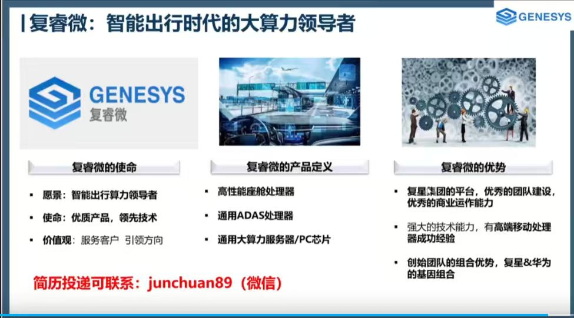
1. 公司使命与愿景:
- 愿景: 成为智能出行算力领域的领导者。
- 使命: 提供优质产品，掌握领先技术。
- 价值观: 服务客户，引领方向。
2. 产品定义:
- 高性能座舱处理器: 针对智能化座舱体验的高算力解决方案。
- 通用 ADAS 处理器: 面向辅助驾驶/自动驾驶的通用处理芯片。
- 通用大算力服务器/PC 芯片: 拓展至通用计算与高性能计算领域。
3. 公司优势:
- 背景与团队: 依托复星集团平台，具备卓越的团队建设与商业运作能力。
- 技术积淀: 团队拥有深厚的高端移动处理器成功研发与量产经验。
- 基因融合: 创始团队融合了复星与华为的优秀技术与管理基因。
人才招聘: 简历投递联系微信: junchuan89